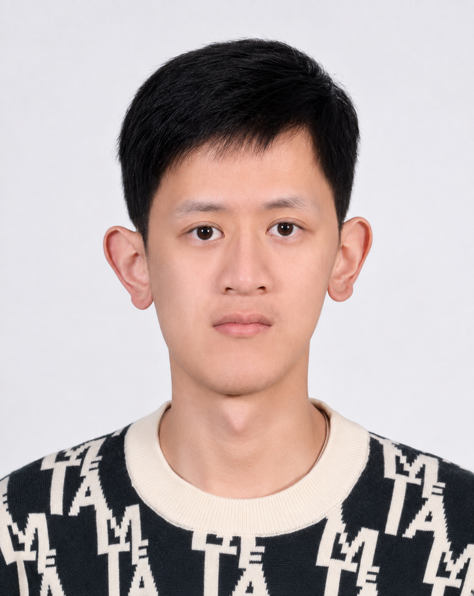

2026
Asymptotics for the noncommutative Painlevé II equation
Nonlinearity39 (2026), 015017
Asymptotic analysis and connection formulas for a class of solutions of the matrix-valued Painlevé II equation.
Journal article
Mathematics · The University of Hong Kong
Postdoctoral Fellow
Hong Kong
I am a Postdoctoral Fellow at The University of Hong Kong, working with Prof. Zhigang Bao.
jwliu26@hku.hk2026
Nonlinearity39 (2026), 015017
Asymptotic analysis and connection formulas for a class of solutions of the matrix-valued Painlevé II equation.
Journal article2025
Journal of the London Mathematical Society112 (2025), e70314
Integrable structure and large gap asymptotics for the thinned and unthinned hard edge tacnode process.
Journal articleBackground, definitions, and motivation behind my research projects.
No public notes yet.
Private notebookJan. 2026
Great Bay University · January 4–16
Aug.–Sep. 2025
ZiF · August 25–September 6
May 2025
Shanghai Jiao Tong University · May 7–9
Jan. 2025
Great Bay University · January 5–17
Aug. 2026 — Present
Postdoctoral Fellow
Supervisor: Prof. Zhigang Bao
Sep. 2021 — Jun. 2026
Ph.D. in Mathematics
Supervisor: Prof. Lun Zhang
2017 — 2021
B.Sc. in Mathematics and Applied Mathematics
The 2026 Joint Workshop of RMTA & SNAB
China
Teaching Assistant · Fudan University
Contact
The University of Hong Kong
Hong Kong